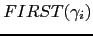

Sig: Derivaciones a vacío
Sup: Análisis Sintáctico Predictivo Recursivo
Ant: Ejercicio: Recorrido del árbol
Err: Si hallas una errata ...
Ejercicio: Factores Comunes
En el programa 4.6.1 el reconocimiento de las categorías gramáticales
statements, expression y term (líneas 19-27) difiere del resto. Observe las reglas:
statements
 statement ';' statements
statement ';' statements  statement
statement |
| expression
term '+' expression
term |
| term
factor '*' term
factor |
¿Son disjuntos los conjuntos

para las partes derechas de las reglas
de statements?
¿Son disjuntos los conjuntos
para las partes derechas de las reglas
de expression?
¿Son disjuntos los conjuntos
para las partes derechas de las reglas
de term?
Si se tiene una variable con producciones:
Las dos producciones tienen un máximo factor común en la izquierda
de su parte derecha  . Asumimos que
.
. Asumimos que
.
- ¿Cómo puede modificarse la gramática para obtener una nueva gramática que cumpla la condición de que las partes derechas tienen conjuntos
disjuntos?
- ¿Puede modificarse la técnica APDR para que funcione sobre gramáticas con este tipo
de producciones?. Observe el código asociado con statements, expression y term.
¿Cómo sería el esquema general?
Sig: Derivaciones a vacío
Sup: Análisis Sintáctico Predictivo Recursivo
Ant: Ejercicio: Recorrido del árbol
Err: Si hallas una errata ...
Casiano Rodríguez León
2013-03-05